|
Opening supportershome 26 januari 2002 |
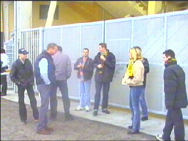
Een kwartiertje voor tijd staan deze SV-leden weg
te waaien in een krachtige westenwind.
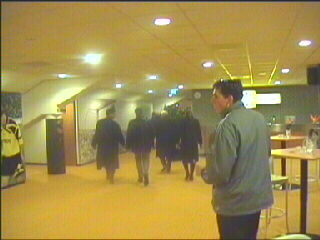
Als om 17.00 uur de poorten nog steeds niet open
zijn besluiten we naar noord te gaan waar we het
bestuur ontwaren en daar maar achteraan lopen.
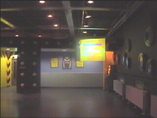
En zo arriveren we in het prachtige supportershome.
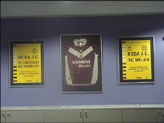
Het Bordeaux-shirt pronkt als trofee tussen twee
wedstrijdaffiches.
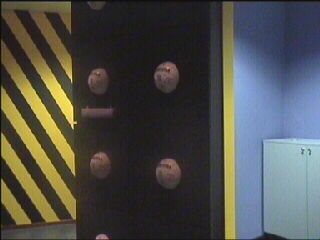
Een stuk van de ballenmuur.
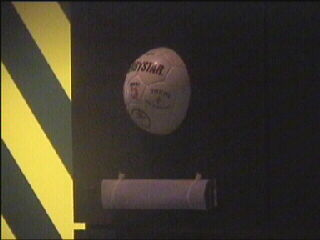
In plexiglas een inscriptie als aandenken aan de
opening van het supportershome door Gene
Hansen op 26 januari 2000 (oeps).
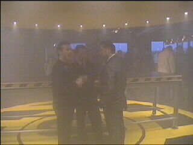
Na een toespraak van Theo Pickee en enkele
woorden van Gene Hansen werd de Roda-cirkel
onthuld met veel rook.
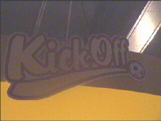
De naam Kick Off was oorspronkelijk bedacht
als naam voor de discotheek aan de oostzijde.
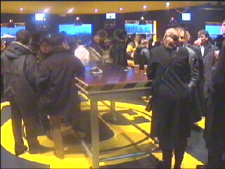
De cirkel met de steh-tisch.
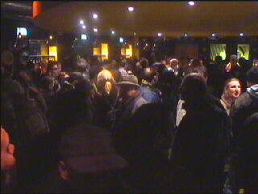
Er kunnen zes tot zevenhonderd mensen binnen.
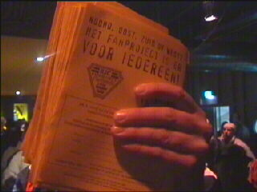
De krantenman.
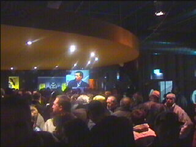
Via een scherm in de hoek kunnen tv-beelden
worden gevolgd.
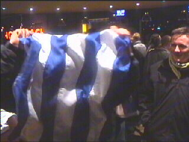
Twan (Herkenbosch) probeert zich te verstoppen
achter een Griekse vlag.
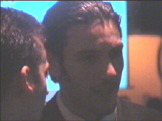
Van de spelers kwamen slechts Vicelich, Tomasic,
Rudge en Van Dessel opdraven.
©KPD